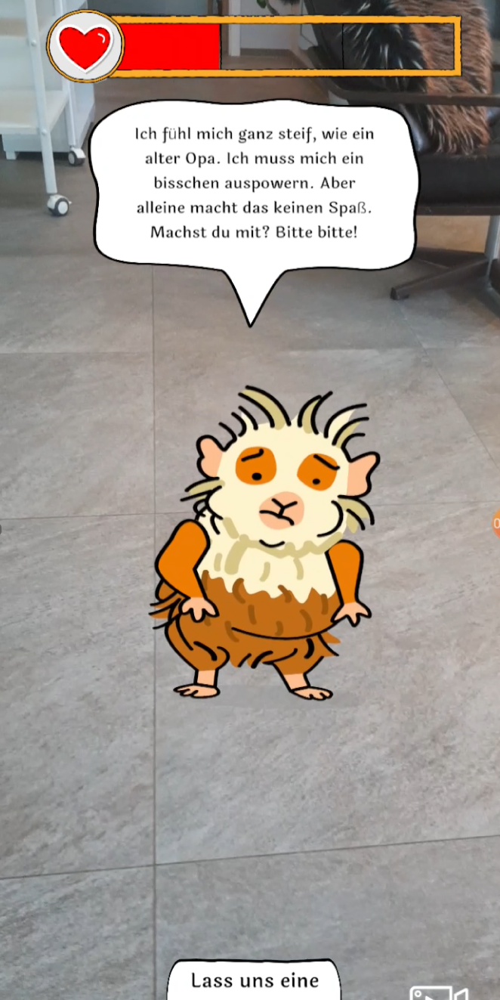
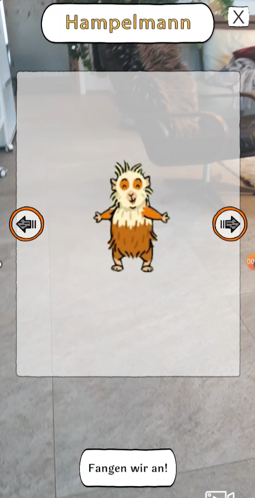
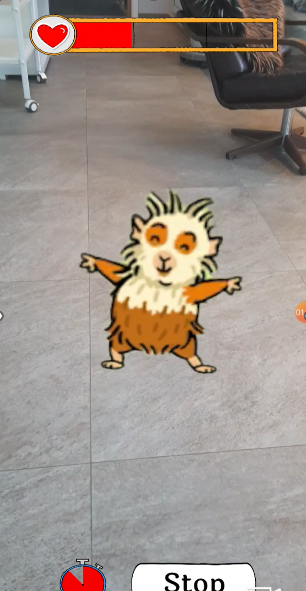
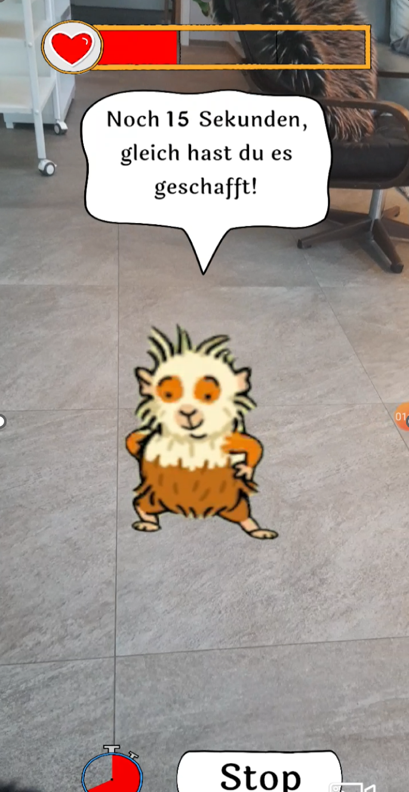
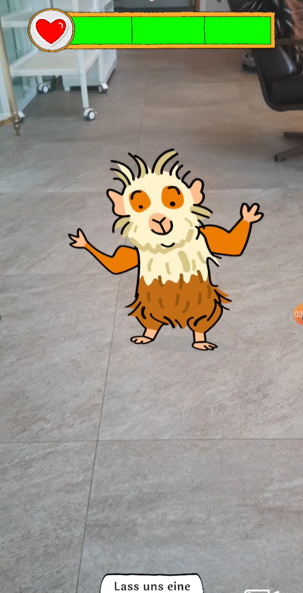
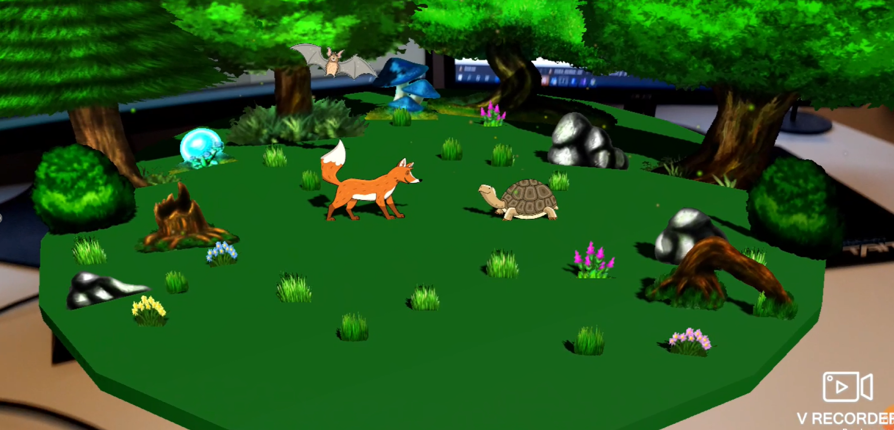

Kinder Fitness App
Unity AR-Foundation

Im Rahmen meiner Werkstudententätigkeit bei MW habe ich den Prototypen dieser Kinder-Fitness-App entwickelt.
Die Tiere zeigen den Kinder wie die Sportübungen auzuführen sind. Außerdem sind die Tiere wie Tamagochis, die man quasi durch Sport füttern kann.





